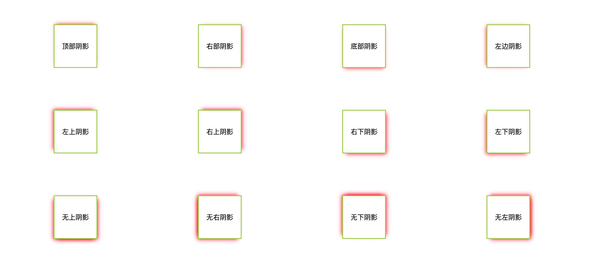

box-shadow 属性用于在元素的框架上添加阴影效果。 你可以在同一个元素上设置多个阴影效果，并用 逗号 将他们分隔开。 该属性可设置的值包括阴影的X轴偏移量、Y轴偏移量、模糊半径、扩散半径和颜色。
box-shadow: [inset] <offset-x> <offset-y> [<blur-radius>] [<spread-radius>] color [,]
1
2
3
4
5
6
7
8
9
10
11
12
13
14
15
16
17
18
19
20
21
|
box-shadow: 60px -16px teal;
box-shadow: 10px 5px 5px black;
box-shadow: 2px 2px 2px 1px rgba(0, 0, 0, 0.2);
box-shadow: inset 5em 1em gold;
box-shadow: 3px 3px red, -1em 0 0.4em olive;
box-shadow: inherit;
box-shadow: initial;
box-shadow: inset;
|
- 如果只给出两个值, 那么这两个值将会被当作 来解释。 设置水平偏移量，正值阴影则位于元素右边，负值阴影则位于元素左边。 设置垂直偏移量，正值阴影则位于元素下方，负值阴影则位于元素上方
- 如果给出了第三个值, 那么第三个值将会被当作解释。值越大，模糊面积越大，阴影越大越淡。不能为负值。
- 如果给出了第四个值, 那么第四个值将会被当作解释。取正值时，阴影扩大；取负值时，阴影收缩。默认为0，此时阴影与元素同样大。
- 可选，inset关键字。默认阴影在边框外，即阴影向外扩散。使用 inset 关键字 会使得阴影落在盒子内部。 此时阴影会在边框之内 、背景之上、内容之下。可选，值。
1
2
3
4
5
6
7
8
9
10
11
12
|
.shadow {
width: 40px;
height: 40px;
margin: 100px auto;
border: 2px solid orange;
box-shadow:
-50px 0px 10px 0px blue,
0px -60px 0px 10px red,
50px 0px 0px 0px green,
0px 50px 0px -10px yellow;
}
|
1
| <div class="shadow"></div>
|

观察图中四色方块可知：第三个数值（模糊半径）控制模糊程度，不改变阴影大小；第四个数值（扩散半径）会改变阴影大小，正值->阴影扩展，负值->阴影收缩。
常见问题：
制作单边阴影时，明明设置了x,y轴方向的偏移，为什么别的边还是有阴影出现？
解决方案：增加此边所在方向的偏移量（数值大小与正负），并适当缩小阴影大小（第四个数值为负值），减少模糊半径的视觉影响；
各种阴影的书写方式
1
2
3
4
5
6
7
8
9
10
11
12
13
14
15
16
17
18
19
20
21
22
23
24
25
26
27
28
29
30
31
32
33
34
35
36
37
38
39
40
41
42
43
44
45
46
47
48
49
50
51
52
53
54
55
56
57
58
59
60
61
62
|
.shadow div {
float: left;
margin: 50px 120px;
width: 100px;
height: 100px;
border: 2px solid yellowgreen;
text-align: center;
line-height: 100px;
}
.top {
box-shadow: 0px -5px 10px -5px red;
}
.right {
box-shadow: 5px 0 10px -5px red;
}
.bottom {
box-shadow: 0 5px 10px -5px red;
}
.left {
box-shadow: -5px 0 10px -5px red;
}
.left-top {
box-shadow: -5px -5px 10px -4px red;
}
.right-top {
box-shadow: 5px -5px 10px -4px red;
}
.right-bottom {
box-shadow: 5px 5px 10px -4px red;
}
.left-bottom {
box-shadow: -5px 5px 10px -4px red;
}
.no-top {
box-shadow: -5px 5px 10px -4px red, 5px 5px 10px -4px red;
}
.no-right {
box-shadow: -5px -5px 10px -4px red, -5px 5px 10px -4px red;
}
.no-bottom {
box-shadow: -5px -5px 10px -4px red, 5px -5px 10px -4px red;
}
.no-left {
box-shadow: 5px 5px 10px -4px red, 5px -5px 10px -4px red;
}
|
1
2
3
4
5
6
7
8
9
10
11
12
13
14
15
16
|
<div class="shadow">
<div class="top">顶部阴影</div>
<div class="right">右部阴影</div>
<div class="bottom">底部阴影</div>
<div class="left">左边阴影</div>
<div class="left-top">左上阴影</div>
<div class="right-top">右上阴影</div>
<div class="right-bottom">右下阴影</div>
<div class="left-bottom">左下阴影</div>
<div class="no-top">无上阴影</div>
<div class="no-right">无右阴影</div>
<div class="no-bottom">无下阴影</div>
<div class="no-left">无左阴影</div>
</div>
|
